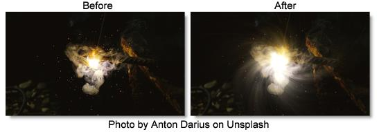

S_Streaks
Description
Motion blurs the bright areas of the image into streaks defined by From and To locations. This can be used to create an extended film exposure effect or simulate soft beams of light.
The S_Streaks filter comes from the Emmy award winning Boris FX Sapphire filter set.
Category
Light.
Controls
Presets
To select a preset, pick one from the Presets window.
Streaks Brightness
Scales the brightness of the streaks.
Exposure Bias
Determines the variable amount of exposure along the path between the From and To transformations. A value of 0 creates more exposure at the From end, .5 causes equal exposure along the path, and 1.0 generates more exposure at the To end. If you have bright spots on a dark background, a 0 value would cause the processed spots to be brighter at the From end and dark at the To end, and a 1 value would cause the opposite.
Threshold
Streaks are generated from locations in the image that are brighter than this value. A value of .9 creates streaks at only the brightest spots. A value of 0 generates streaks for every non−black area.
Threshold Add Color
This can be used to raise the threshold on a specific color and thereby reduce the streaks generated on areas of the source clip containing that color.
Center
The center of rotation and zooming. The shift values should be zero for this parameter to make sense.
From Z Dist
The distance of the From transformation. This zooms about the Center location when Shift is 0. Increase to zoom out or decrease to zoom in.
From Rotate
The rotation angle of the From transformation, in degrees, about the center.
From Shift X & Y
The horizontal and vertical translations of the From transformation. This can be used for directional motion. If it is non−zero, the center location becomes less meaningful.
To Z Dist
The 'distance' of the To transformation. Increase to zoom out or decrease to zoom in.
To Rotate
The rotation angle of the To transformation, in degrees, about the center. Note that if the From and To Rotate angles are very different, the interpolation between them will become less accurate.
To Shift X & Y
The horizontal and vertical translations of the To transformation. This can be used for directional motion. If it is non−zero, the center location becomes less meaningful.
Mix Source Darks
The dark non−streaked components of the Source are scaled by this amount and added to the result. This allows combining the streaked and non−streaked versions of the image.
Mix Source Brights
The original bright components of the image that were used to generate the streaks are scaled by this amount and added to the result. This allows combining some non−streaked bright areas of the image with the output.
Result Brightness
Scales the brightness of the result.
Combine
Determines how the streaks are combined with the image.
Add
Adds the streaks to the image.
Screen
Performs a blend function which can help prevent overly bright results.
Wrap
Determines the method for accessing outside the borders of the image.
No
Produces black beyond the borders.
Tile
Repeats a copy of the image.
Reflect
Repeats a mirrored copy. Edges are often less visible with this method.
Streaks Res
Selects the resolution factor for the streaks. This is similar to the general 'Res' factor parameter, but it only affects the streaks. The original mixed with the streaks remains at full resolution. Higher resolutions have better quality while lower resolutions provide faster processing.
Full
Full resolution is used.
Half
The streaks are calculated at half resolution.
Quarter
The streaks are calculated at quarter resolution.
Subpixel
If enabled, uses a better quality but slightly slower method for rendering the streaks.
Show Center
Enables/disables the on-screen control for adjusting the Center parameter.
Show From Transfm
Enables/disables the on-screen control for adjusting the From Z Dist and From Rotate parameters.
Show To Transform
Enables/disables the on-screen control for adjusting the To Z Dist and To Rotate parameters.
Show From Shift
Enables/disables the on-screen control for adjusting the From Shift parameter.
Show To Shift
Enables/disables the on-screen control for adjusting the To Shift parameter.